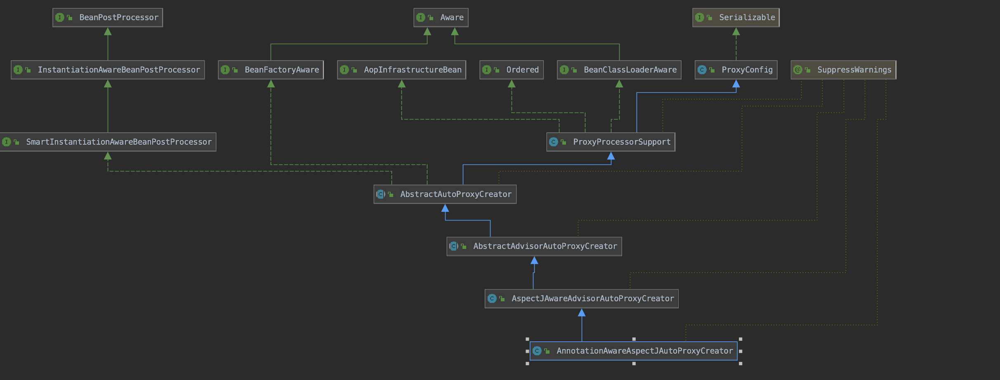
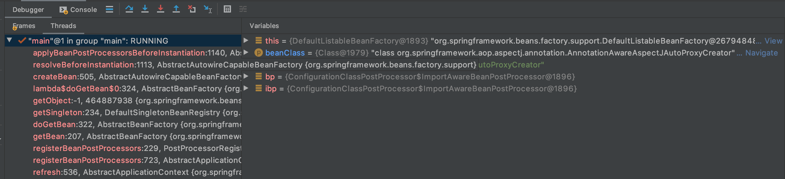

<!DOCTYPE html>


<html lang="zh-CN">


<head>
  <meta charset="utf-8" />
    
  <meta name="viewport" content="width=device-width, initial-scale=1, maximum-scale=1" />
  <title>
    Spring-Aop源码 |  
  </title>
  <meta name="generator" content="hexo-theme-ayer">
  
  <link rel="shortcut icon" href="/favicon.ico" />
  
  
<link rel="stylesheet" href="/dist/main.css">

  
<link rel="stylesheet" href="https://cdn.jsdelivr.net/gh/Shen-Yu/cdn/css/remixicon.min.css">

  
<link rel="stylesheet" href="/css/custom.css">

  
  
<script src="https://cdn.jsdelivr.net/npm/pace-js@1.0.2/pace.min.js"></script>

  
  

  

</head>

</html>

<body>
  <div id="app">
    
      
    <main class="content on">
      <section class="outer">
  <article
  id="post-Spring-Aop源码"
  class="article article-type-post"
  itemscope
  itemprop="blogPost"
  data-scroll-reveal
>
  <div class="article-inner">
    
    <header class="article-header">
       
<h1 class="article-title sea-center" style="border-left:0" itemprop="name">
  Spring-Aop源码
</h1>
 

    </header>
     
    <div class="article-meta">
      <a href="/2020/10/14/Spring-Aop%E6%BA%90%E7%A0%81/" class="article-date">
  <time datetime="2020-10-14T05:58:30.000Z" itemprop="datePublished">2020-10-14</time>
</a>   
<div class="word_count">
    <span class="post-time">
        <span class="post-meta-item-icon">
            <i class="ri-quill-pen-line"></i>
            <span class="post-meta-item-text"> 字数统计:</span>
            <span class="post-count">2.7k</span>
        </span>
    </span>

    <span class="post-time">
        &nbsp; | &nbsp;
        <span class="post-meta-item-icon">
            <i class="ri-book-open-line"></i>
            <span class="post-meta-item-text"> 阅读时长≈</span>
            <span class="post-count">14 分钟</span>
        </span>
    </span>
</div>
 
    </div>
      
    <div class="tocbot"></div>


  
    <div class="article-entry" itemprop="articleBody">
       
  <h3 id="Spring-Aop源码"><a href="#Spring-Aop源码" class="headerlink" title="Spring-Aop源码"></a>Spring-Aop源码</h3><h4 id="Aop-Demo"><a href="#Aop-Demo" class="headerlink" title="Aop Demo"></a>Aop Demo</h4><p>配置类：AopConfig.java</p>
<figure class="highlight java"><table><tr><td class="gutter"><pre><span class="line">1</span><br><span class="line">2</span><br><span class="line">3</span><br><span class="line">4</span><br><span class="line">5</span><br><span class="line">6</span><br><span class="line">7</span><br><span class="line">8</span><br><span class="line">9</span><br><span class="line">10</span><br><span class="line">11</span><br></pre></td><td class="code"><pre><span class="line"><span class="meta">@Configuration</span></span><br><span class="line"><span class="meta">@EnableAspectJAutoProxy</span></span><br><span class="line"><span class="meta">@ComponentScan</span>(<span class="string">"com.ldy.ldystudent.aop"</span>)</span><br><span class="line"><span class="keyword">public</span> <span class="class"><span class="keyword">class</span> <span class="title">AopConfig</span> </span>&#123;</span><br><span class="line"></span><br><span class="line">    <span class="meta">@Bean</span></span><br><span class="line">    <span class="function"><span class="keyword">public</span> AopInterface <span class="title">aopInterface</span><span class="params">()</span></span>&#123;</span><br><span class="line">        <span class="keyword">return</span> <span class="keyword">new</span> LdyAop() ;</span><br><span class="line">    &#125;</span><br><span class="line"></span><br><span class="line">&#125;</span><br></pre></td></tr></table></figure>

<a id="more"></a>

<p>接口：AopInterface.java</p>
<figure class="highlight java"><table><tr><td class="gutter"><pre><span class="line">1</span><br><span class="line">2</span><br><span class="line">3</span><br><span class="line">4</span><br><span class="line">5</span><br><span class="line">6</span><br><span class="line">7</span><br><span class="line">8</span><br><span class="line">9</span><br></pre></td><td class="code"><pre><span class="line"><span class="keyword">public</span> <span class="class"><span class="keyword">interface</span> <span class="title">AopInterface</span> </span>&#123;</span><br><span class="line"></span><br><span class="line">    <span class="function"><span class="keyword">void</span> <span class="title">test01</span><span class="params">()</span> </span>;</span><br><span class="line"></span><br><span class="line">    <span class="function"><span class="keyword">void</span> <span class="title">test02</span><span class="params">()</span> </span>;</span><br><span class="line"></span><br><span class="line">    <span class="function"><span class="keyword">void</span> <span class="title">test03</span><span class="params">()</span> </span>;</span><br><span class="line"></span><br><span class="line">&#125;</span><br></pre></td></tr></table></figure>

<p>实现类：LdyAop.java</p>
<figure class="highlight java"><table><tr><td class="gutter"><pre><span class="line">1</span><br><span class="line">2</span><br><span class="line">3</span><br><span class="line">4</span><br><span class="line">5</span><br><span class="line">6</span><br><span class="line">7</span><br><span class="line">8</span><br><span class="line">9</span><br><span class="line">10</span><br><span class="line">11</span><br><span class="line">12</span><br><span class="line">13</span><br><span class="line">14</span><br><span class="line">15</span><br><span class="line">16</span><br><span class="line">17</span><br></pre></td><td class="code"><pre><span class="line"><span class="meta">@Component</span></span><br><span class="line"><span class="keyword">public</span> <span class="class"><span class="keyword">class</span> <span class="title">LdyAop</span> <span class="keyword">implements</span> <span class="title">AopInterface</span> </span>&#123;</span><br><span class="line">    <span class="meta">@Override</span></span><br><span class="line">    <span class="function"><span class="keyword">public</span> <span class="keyword">void</span> <span class="title">test01</span><span class="params">()</span> </span>&#123;</span><br><span class="line">        System.out.println(<span class="string">"hello test01"</span>) ;</span><br><span class="line">    &#125;</span><br><span class="line"></span><br><span class="line">    <span class="meta">@Override</span></span><br><span class="line">    <span class="function"><span class="keyword">public</span> <span class="keyword">void</span> <span class="title">test02</span><span class="params">()</span> </span>&#123;</span><br><span class="line">        System.out.println(<span class="string">"hello test02"</span>) ;</span><br><span class="line">    &#125;</span><br><span class="line"></span><br><span class="line">    <span class="meta">@Override</span></span><br><span class="line">    <span class="function"><span class="keyword">public</span> <span class="keyword">void</span> <span class="title">test03</span><span class="params">()</span> </span>&#123;</span><br><span class="line">        System.out.println(<span class="string">"hello test03"</span>) ;</span><br><span class="line">    &#125;</span><br><span class="line">&#125;</span><br></pre></td></tr></table></figure>

<p>增强类：LdyAspect.java</p>
<figure class="highlight java"><table><tr><td class="gutter"><pre><span class="line">1</span><br><span class="line">2</span><br><span class="line">3</span><br><span class="line">4</span><br><span class="line">5</span><br><span class="line">6</span><br><span class="line">7</span><br><span class="line">8</span><br><span class="line">9</span><br><span class="line">10</span><br><span class="line">11</span><br><span class="line">12</span><br><span class="line">13</span><br><span class="line">14</span><br><span class="line">15</span><br><span class="line">16</span><br><span class="line">17</span><br><span class="line">18</span><br><span class="line">19</span><br><span class="line">20</span><br><span class="line">21</span><br><span class="line">22</span><br><span class="line">23</span><br><span class="line">24</span><br><span class="line">25</span><br><span class="line">26</span><br><span class="line">27</span><br><span class="line">28</span><br><span class="line">29</span><br><span class="line">30</span><br><span class="line">31</span><br><span class="line">32</span><br><span class="line">33</span><br><span class="line">34</span><br></pre></td><td class="code"><pre><span class="line"><span class="meta">@Aspect</span></span><br><span class="line"><span class="meta">@Order</span></span><br><span class="line"><span class="meta">@Component</span></span><br><span class="line"><span class="keyword">public</span> <span class="class"><span class="keyword">class</span> <span class="title">LdyAspect</span> </span>&#123;</span><br><span class="line"></span><br><span class="line"><span class="comment">//    /*引入:*/</span></span><br><span class="line"><span class="comment">//    @DeclareParents(value="com.ldy.ldystudent.aop.LdyAop",   // 动态实现的类</span></span><br><span class="line"><span class="comment">//            defaultImpl = SimpleProgramCalculate.class)  // 引入的接口的默认实现</span></span><br><span class="line"><span class="comment">//    public static ProgramCalculate programCalculate;    // 引入的接口</span></span><br><span class="line"></span><br><span class="line">    <span class="meta">@Pointcut</span>(<span class="string">"execution(* com.ldy.ldystudent.aop.LdyAop.*(..))"</span>)</span><br><span class="line"><span class="comment">//    @Pointcut("execution(* com.ldy.ldystudent.aop.LdyAop.test01())")</span></span><br><span class="line">    <span class="function"><span class="keyword">public</span> <span class="keyword">void</span> <span class="title">pointcut</span><span class="params">()</span></span>&#123;&#125; ;</span><br><span class="line"></span><br><span class="line">    <span class="meta">@Before</span>(value = <span class="string">"pointcut()"</span>)</span><br><span class="line">    <span class="function"><span class="keyword">public</span> <span class="keyword">void</span> <span class="title">before</span><span class="params">(JoinPoint joinPoint)</span></span>&#123;</span><br><span class="line">        System.out.println(joinPoint.getSignature().getName()+<span class="string">"的前置方法"</span>) ;</span><br><span class="line">    &#125;</span><br><span class="line"></span><br><span class="line">    <span class="meta">@After</span>(value = <span class="string">"pointcut()"</span>)</span><br><span class="line">    <span class="function"><span class="keyword">public</span> <span class="keyword">void</span> <span class="title">after</span><span class="params">(JoinPoint joinPoint)</span></span>&#123;</span><br><span class="line">        System.out.println(joinPoint.getSignature().getName()+<span class="string">"的后置方法"</span>) ;</span><br><span class="line">    &#125;</span><br><span class="line"></span><br><span class="line">    <span class="meta">@AfterReturning</span>(value = <span class="string">"pointcut()"</span>)</span><br><span class="line">    <span class="function"><span class="keyword">public</span> <span class="keyword">void</span> <span class="title">afterReturning</span><span class="params">(JoinPoint joinPoint)</span></span>&#123;</span><br><span class="line">        System.out.println(joinPoint.getSignature().getName()+<span class="string">"的后置返回方法"</span>) ;</span><br><span class="line">    &#125;</span><br><span class="line"></span><br><span class="line">    <span class="meta">@AfterThrowing</span>(value = <span class="string">"pointcut()"</span>)</span><br><span class="line">    <span class="function"><span class="keyword">public</span> <span class="keyword">void</span> <span class="title">methodAfterThrowing</span><span class="params">(JoinPoint joinPoint)</span> </span>&#123;</span><br><span class="line">        System.out.println(joinPoint.getSignature().getName()+<span class="string">"的一场通知"</span>) ;</span><br><span class="line">    &#125;</span><br><span class="line">&#125;</span><br></pre></td></tr></table></figure>

<p>执行类：LdyMain.java</p>
<figure class="highlight java"><table><tr><td class="gutter"><pre><span class="line">1</span><br><span class="line">2</span><br><span class="line">3</span><br><span class="line">4</span><br><span class="line">5</span><br><span class="line">6</span><br><span class="line">7</span><br><span class="line">8</span><br><span class="line">9</span><br></pre></td><td class="code"><pre><span class="line"><span class="keyword">public</span> <span class="class"><span class="keyword">class</span> <span class="title">LdyMain</span> </span>&#123;</span><br><span class="line"></span><br><span class="line">    <span class="function"><span class="keyword">public</span> <span class="keyword">static</span> <span class="keyword">void</span> <span class="title">main</span><span class="params">(String[] args)</span> </span>&#123;</span><br><span class="line">        AnnotationConfigApplicationContext annotationConfigApplicationContext = <span class="keyword">new</span> AnnotationConfigApplicationContext(AopConfig<span class="class">.<span class="keyword">class</span>) </span>;</span><br><span class="line">        AopInterface ldyAop = (AopInterface) annotationConfigApplicationContext.getBean(<span class="string">"ldyAop"</span>);</span><br><span class="line">        ldyAop.test02();</span><br><span class="line">    &#125;</span><br><span class="line"></span><br><span class="line">&#125;</span><br></pre></td></tr></table></figure>

<p>执行结果：</p>
<figure class="highlight java"><table><tr><td class="gutter"><pre><span class="line">1</span><br><span class="line">2</span><br><span class="line">3</span><br><span class="line">4</span><br><span class="line">5</span><br><span class="line">6</span><br><span class="line">7</span><br><span class="line">8</span><br><span class="line">9</span><br></pre></td><td class="code"><pre><span class="line"><span class="number">14</span>:<span class="number">12</span>:<span class="number">59.590</span> [main] DEBUG org.springframework.aop.aspectj.annotation.ReflectiveAspectJAdvisorFactory - Found AspectJ method: <span class="keyword">public</span> <span class="keyword">void</span> com.ldy.ldystudent.aop.LdyAspect.methodAfterThrowing(org.aspectj.lang.JoinPoint)</span><br><span class="line"><span class="number">14</span>:<span class="number">12</span>:<span class="number">59.776</span> [main] DEBUG org.springframework.beans.factory.support.DefaultListableBeanFactory - Creating shared instance of singleton bean <span class="string">'ldyAop'</span></span><br><span class="line"><span class="number">14</span>:<span class="number">12</span>:<span class="number">59.830</span> [main] DEBUG org.springframework.beans.factory.support.DefaultListableBeanFactory - Creating shared instance of singleton bean <span class="string">'ldyAspect'</span></span><br><span class="line"><span class="number">14</span>:<span class="number">12</span>:<span class="number">59.835</span> [main] DEBUG org.springframework.beans.factory.support.DefaultListableBeanFactory - Creating shared instance of singleton bean <span class="string">'aopInterface'</span></span><br><span class="line">test02的前置方法</span><br><span class="line">hello test02</span><br><span class="line">test02的后置返回方法</span><br><span class="line">test02的后置方法</span><br><span class="line">Disconnected from the target VM, address: <span class="string">'127.0.0.1:0'</span>, transport: <span class="string">'socket'</span></span><br></pre></td></tr></table></figure>

<p>以上就完成了简单的Aop类的增强。</p>
<h4 id="源码解析"><a href="#源码解析" class="headerlink" title="源码解析"></a>源码解析</h4><p>我们知道，spring中的aop是通过动态代理实现的，那么他具体是如何实现的呢?spring通过一个切面类，在他的类上加入@Aspect注 解，定义一个Pointcut方法，最后定义一系列的增强方法。这样就完成一个对象的切面操作。 那么思考一下，按照上述的基础，要实现我们的aop，大致有以下思路:<br> 1.找到所有的切面类</p>
<p>2.解析出所有的advice并保存 </p>
<p>3.创建一个动态代理类</p>
<p>4.调用被代理类的方法时，找到他的所有增强器，并增强当前的方法</p>
<h5 id="一、切面类解析"><a href="#一、切面类解析" class="headerlink" title="一、切面类解析"></a>一、切面类解析</h5><p>spring通过@EnableAspectJAutoProxy开启aop切面，在注解类上面发现@Import(AspectJAutoProxyRegistrar.class)， AspectJAutoProxyRegistrar实现了ImportBeanDefinitionRegistrar，所以他会通过registerBeanDefinitions方法为我们容器导入 beanDefinition。</p>
<p></p>
<h6 id="进入解析切面的过程"><a href="#进入解析切面的过程" class="headerlink" title="进入解析切面的过程:"></a>进入解析切面的过程:</h6><p>postProcessBeforeInstantiation是在任意bean创建的时候就调用了 org.springframework.beans.factory.support.AbstractAutowireCapableBeanFactory#resolveBeforeInstantiation org.springframework.beans.factory.support.AbstractAutowireCapableBeanFactory#applyBeanPostProcessorsBeforeInstantia org.springframework.beans.factory.config.InstantiationAwareBeanPostProcessor#postProcessBeforeInstantiation org.springframework.aop.framework.autoproxy.AbstractAutoProxyCreator#postProcessBeforeInstantiation</p>
<p></p>
<p>追踪一下源码可以看到最终导入AnnotationAwareAspectJAutoProxyCreator，我们看一下他的类继承关系图，发现它实现了两个重要 的接口，BeanPostProcessor和InstantiationAwareBeanPostProcessor 首先看InstantiationAwareBeanPostProcessor的postProcessBeforeInstantiation方法</p>
<p>Object postProcessBeforeInstantiation(Class&lt;?&gt; beanClass, String beanName)(InstantiationAwareBeanPostProcessor)</p>
<p>org.springframework.aop.framework.autoproxy.AbstractAutoProxyCreator#postProcessBeforeInstantiation org.springframework.aop.aspectj.autoproxy.AspectJAwareAdvisorAutoProxyCreator#shouldSkip org.springframework.aop.aspectj.annotation.AnnotationAwareAspectJAutoProxyCreator#findCandidateAdvisors org.springframework.aop.aspectj.annotation.BeanFactoryAspectJAdvisorsBuilder#buildAspectJAdvisors</p>
<figure class="highlight java"><table><tr><td class="gutter"><pre><span class="line">1</span><br><span class="line">2</span><br><span class="line">3</span><br><span class="line">4</span><br><span class="line">5</span><br><span class="line">6</span><br><span class="line">7</span><br><span class="line">8</span><br><span class="line">9</span><br><span class="line">10</span><br><span class="line">11</span><br><span class="line">12</span><br><span class="line">13</span><br><span class="line">14</span><br><span class="line">15</span><br><span class="line">16</span><br><span class="line">17</span><br><span class="line">18</span><br><span class="line">19</span><br><span class="line">20</span><br><span class="line">21</span><br><span class="line">22</span><br><span class="line">23</span><br><span class="line">24</span><br><span class="line">25</span><br><span class="line">26</span><br><span class="line">27</span><br><span class="line">28</span><br><span class="line">29</span><br><span class="line">30</span><br><span class="line">31</span><br><span class="line">32</span><br><span class="line">33</span><br><span class="line">34</span><br><span class="line">35</span><br><span class="line">36</span><br><span class="line">37</span><br><span class="line">38</span><br><span class="line">39</span><br><span class="line">40</span><br><span class="line">41</span><br><span class="line">42</span><br><span class="line">43</span><br><span class="line">44</span><br><span class="line">45</span><br><span class="line">46</span><br><span class="line">47</span><br><span class="line">48</span><br><span class="line">49</span><br><span class="line">50</span><br><span class="line">51</span><br><span class="line">52</span><br><span class="line">53</span><br><span class="line">54</span><br><span class="line">55</span><br><span class="line">56</span><br><span class="line">57</span><br><span class="line">58</span><br><span class="line">59</span><br><span class="line">60</span><br><span class="line">61</span><br><span class="line">62</span><br><span class="line">63</span><br><span class="line">64</span><br><span class="line">65</span><br><span class="line">66</span><br><span class="line">67</span><br><span class="line">68</span><br><span class="line">69</span><br><span class="line">70</span><br><span class="line">71</span><br><span class="line">72</span><br><span class="line">73</span><br><span class="line">74</span><br><span class="line">75</span><br><span class="line">76</span><br><span class="line">77</span><br><span class="line">78</span><br><span class="line">79</span><br><span class="line">80</span><br><span class="line">81</span><br><span class="line">82</span><br><span class="line">83</span><br><span class="line">84</span><br><span class="line">85</span><br><span class="line">86</span><br><span class="line">87</span><br></pre></td><td class="code"><pre><span class="line"><span class="comment">/**</span></span><br><span class="line"><span class="comment"> * Look for AspectJ-annotated aspect beans in the current bean factory,</span></span><br><span class="line"><span class="comment"> * and return to a list of Spring AOP Advisors representing them.</span></span><br><span class="line"><span class="comment"> * &lt;p&gt;Creates a Spring Advisor for each AspectJ advice method.</span></span><br><span class="line"><span class="comment"> * <span class="doctag">@return</span> the list of &#123;<span class="doctag">@link</span> org.springframework.aop.Advisor&#125; beans</span></span><br><span class="line"><span class="comment"> * <span class="doctag">@see</span> #isEligibleBean</span></span><br><span class="line"><span class="comment"> */</span></span><br><span class="line"><span class="function"><span class="keyword">public</span> List&lt;Advisor&gt; <span class="title">buildAspectJAdvisors</span><span class="params">()</span> </span>&#123;</span><br><span class="line">  <span class="comment">// 获取缓存中的aspectBeanNames</span></span><br><span class="line">   List&lt;String&gt; aspectNames = <span class="keyword">this</span>.aspectBeanNames;</span><br><span class="line"></span><br><span class="line">   <span class="keyword">if</span> (aspectNames == <span class="keyword">null</span>) &#123;</span><br><span class="line">      <span class="keyword">synchronized</span> (<span class="keyword">this</span>) &#123;</span><br><span class="line">         aspectNames = <span class="keyword">this</span>.aspectBeanNames;</span><br><span class="line">         <span class="keyword">if</span> (aspectNames == <span class="keyword">null</span>) &#123;</span><br><span class="line">            List&lt;Advisor&gt; advisors = <span class="keyword">new</span> ArrayList&lt;&gt;();</span><br><span class="line">            aspectNames = <span class="keyword">new</span> ArrayList&lt;&gt;();</span><br><span class="line">           <span class="comment">// 获取beanFactory中所有beanNames</span></span><br><span class="line">            String[] beanNames = BeanFactoryUtils.beanNamesForTypeIncludingAncestors(</span><br><span class="line">                  <span class="keyword">this</span>.beanFactory, Object<span class="class">.<span class="keyword">class</span>, <span class="title">true</span>, <span class="title">false</span>)</span>;</span><br><span class="line">            <span class="keyword">for</span> (String beanName : beanNames) &#123;</span><br><span class="line">               <span class="keyword">if</span> (!isEligibleBean(beanName)) &#123;</span><br><span class="line">                  <span class="keyword">continue</span>;</span><br><span class="line">               &#125;</span><br><span class="line">               <span class="comment">// We must be careful not to instantiate beans eagerly as in this case they</span></span><br><span class="line">               <span class="comment">// would be cached by the Spring container but would not have been weaved.</span></span><br><span class="line">               Class&lt;?&gt; beanType = <span class="keyword">this</span>.beanFactory.getType(beanName, <span class="keyword">false</span>);</span><br><span class="line">               <span class="keyword">if</span> (beanType == <span class="keyword">null</span>) &#123;</span><br><span class="line">                  <span class="keyword">continue</span>;</span><br><span class="line">               &#125;</span><br><span class="line">              <span class="comment">//找出所有类上面含@Aspect注解的beanName</span></span><br><span class="line">               <span class="keyword">if</span> (<span class="keyword">this</span>.advisorFactory.isAspect(beanType)) &#123;</span><br><span class="line">                 <span class="comment">//将找到的beanName放入aspectNames集合</span></span><br><span class="line">                  aspectNames.add(beanName);</span><br><span class="line">                  AspectMetadata amd = <span class="keyword">new</span> AspectMetadata(beanType, beanName);</span><br><span class="line">                  <span class="keyword">if</span> (amd.getAjType().getPerClause().getKind() == PerClauseKind.SINGLETON) &#123;</span><br><span class="line">                     MetadataAwareAspectInstanceFactory factory =</span><br><span class="line">                           <span class="keyword">new</span> BeanFactoryAspectInstanceFactory(<span class="keyword">this</span>.beanFactory, beanName);</span><br><span class="line">                    <span class="comment">//1.找到切面类的所有但是不包括@Pointcut注解的方法</span></span><br><span class="line">										<span class="comment">//2.筛选出来包含@Around, @Before, @After,@ AfterReturning， @AfterThrowing注解的方法 </span></span><br><span class="line">                    <span class="comment">//3.封装为List&lt;Advisor&gt;返回</span></span><br><span class="line">                     List&lt;Advisor&gt; classAdvisors = <span class="keyword">this</span>.advisorFactory.getAdvisors(factory);</span><br><span class="line">                     <span class="keyword">if</span> (<span class="keyword">this</span>.beanFactory.isSingleton(beanName)) &#123;</span><br><span class="line">                       <span class="comment">//将上面找出来的Advisor按照key为beanName，value为List&lt;Advisor&gt;的形式存入advisorsCache</span></span><br><span class="line">                        <span class="keyword">this</span>.advisorsCache.put(beanName, classAdvisors);</span><br><span class="line">                     &#125;</span><br><span class="line">                     <span class="keyword">else</span> &#123;</span><br><span class="line">                        <span class="keyword">this</span>.aspectFactoryCache.put(beanName, factory);</span><br><span class="line">                     &#125;</span><br><span class="line">                     advisors.addAll(classAdvisors);</span><br><span class="line">                  &#125;</span><br><span class="line">                  <span class="keyword">else</span> &#123;</span><br><span class="line">                     <span class="comment">// Per target or per this.</span></span><br><span class="line">                     <span class="keyword">if</span> (<span class="keyword">this</span>.beanFactory.isSingleton(beanName)) &#123;</span><br><span class="line">                        <span class="keyword">throw</span> <span class="keyword">new</span> IllegalArgumentException(<span class="string">"Bean with name '"</span> + beanName +</span><br><span class="line">                              <span class="string">"' is a singleton, but aspect instantiation model is not singleton"</span>);</span><br><span class="line">                     &#125;</span><br><span class="line">                     MetadataAwareAspectInstanceFactory factory =</span><br><span class="line">                           <span class="keyword">new</span> PrototypeAspectInstanceFactory(<span class="keyword">this</span>.beanFactory, beanName);</span><br><span class="line">                     <span class="keyword">this</span>.aspectFactoryCache.put(beanName, factory);</span><br><span class="line">                     advisors.addAll(<span class="keyword">this</span>.advisorFactory.getAdvisors(factory));</span><br><span class="line">                  &#125;</span><br><span class="line">               &#125;</span><br><span class="line">            &#125;</span><br><span class="line">            <span class="keyword">this</span>.aspectBeanNames = aspectNames;</span><br><span class="line">            <span class="keyword">return</span> advisors;</span><br><span class="line">         &#125;</span><br><span class="line">      &#125;</span><br><span class="line">   &#125;</span><br><span class="line"></span><br><span class="line">   <span class="keyword">if</span> (aspectNames.isEmpty()) &#123;</span><br><span class="line">      <span class="keyword">return</span> Collections.emptyList();</span><br><span class="line">   &#125;</span><br><span class="line">   List&lt;Advisor&gt; advisors = <span class="keyword">new</span> ArrayList&lt;&gt;();</span><br><span class="line">   <span class="keyword">for</span> (String aspectName : aspectNames) &#123;</span><br><span class="line">     <span class="comment">//当再次进入该方法，会直接从advisorsCache缓存中获取</span></span><br><span class="line">      List&lt;Advisor&gt; cachedAdvisors = <span class="keyword">this</span>.advisorsCache.get(aspectName);</span><br><span class="line">      <span class="keyword">if</span> (cachedAdvisors != <span class="keyword">null</span>) &#123;</span><br><span class="line">         advisors.addAll(cachedAdvisors);</span><br><span class="line">      &#125;</span><br><span class="line">      <span class="keyword">else</span> &#123;</span><br><span class="line">         MetadataAwareAspectInstanceFactory factory = <span class="keyword">this</span>.aspectFactoryCache.get(aspectName);</span><br><span class="line">         advisors.addAll(<span class="keyword">this</span>.advisorFactory.getAdvisors(factory));</span><br><span class="line">      &#125;</span><br><span class="line">   &#125;</span><br><span class="line">   <span class="keyword">return</span> advisors;</span><br><span class="line">&#125;</span><br></pre></td></tr></table></figure>

<h5 id="二、创建代理"><a href="#二、创建代理" class="headerlink" title="二、创建代理"></a>二、创建代理</h5><p>postProcessAfterInitialization是在bean创建完成之后执行的 org.springframework.beans.factory.support.AbstractAutowireCapableBeanFactory#doCreateBean org.springframework.beans.factory.support.AbstractAutowireCapableBeanFactory#initializeBean(java.lang.String, java.lang.Object, org.springframework.beans.factory.support.RootBeanDefinition)</p>
<p>org.springframework.beans.factory.support.AbstractAutowireCapableBeanFactory#applyBeanPostProcessorsAfterInitializati org.springframework.beans.factory.config.BeanPostProcessor#postProcessAfterInitialization org.springframework.aop.framework.autoproxy.AbstractAutoProxyCreator#postProcessAfterInitialization</p>
<p>1.获取advisors:创建代理之前首先要判断当前bean是否满足被代理， 所以需要将advisor从之前的缓存中拿出来和当前bean 根据表达式进行匹配:</p>
<p>Object postProcessAfterInitialization(@Nullable Object bean, String beanName)(BeanPostProcessor) org.springframework.aop.framework.autoproxy.AbstractAutoProxyCreator#postProcessAfterInitialization org.springframework.aop.framework.autoproxy.AbstractAutoProxyCreator#wrapIfNecessary org.springframework.aop.framework.autoproxy.AbstractAdvisorAutoProxyCreator#getAdvicesAndAdvisorsForBean org.springframework.aop.aspectj.annotation.AnnotationAwareAspectJAutoProxyCreator#findCandidateAdvisors</p>
<p>上述代码的链路最终到了findCandidateAdvisors，我们发现在postProcessBeforeInstantiation方法中对查找到的Advisors做了缓存， 所以这里只需要从缓存中取就好了<br> 最后创建代理类，并将Advisors赋予代理类，缓存当前的代理类</p>
<p>2.匹配:根据advisors和当前的bean根据切点表达式进行匹配，看是否符合。</p>
<p>org.springframework.aop.framework.autoproxy.AbstractAdvisorAutoProxyCreator#findAdvisorsThatCanApply org.springframework.aop.support.AopUtils#findAdvisorsThatCanApply org.springframework.aop.support.AopUtils#canApply(org.springframework.aop.Advisor, java.lang.Class&lt;?&gt;, boolean)</p>
<p>拿到PointCut</p>
<p>org.springframework.aop.support.AopUtils#canApply(org.springframework.aop.Pointcut, java.lang.Class&lt;?&gt;, boolean) org.springframework.aop.ClassFilter#matches 粗筛</p>
<p>org.springframework.aop.IntroductionAwareMethodMatcher#matches 精筛</p>
<p>3.创建代理:找到了 和当前Bean匹配的advisor说明满足创建动态代理的条件:</p>
<figure class="highlight java"><table><tr><td class="gutter"><pre><span class="line">1</span><br><span class="line">2</span><br></pre></td><td class="code"><pre><span class="line">Object proxy = createProxy(</span><br><span class="line">      bean.getClass(), beanName, specificInterceptors, <span class="keyword">new</span> SingletonTargetSource(bean));</span><br></pre></td></tr></table></figure>

<p>调用ProxyFactory创建动态代理</p>
<p>这里创建会选择JDK和CGLIB 两大因素</p>
<p>有接口：JDK代理</p>
<p>无接口：CGLIB代理</p>
<p>理解了上面两个重要的方法，我们只需要将他与创建bean的流程联系起来就可以知道代理对象创建的整个流程了，在before和after方法 分别放置断点，我们可以看到他的整个调用链路</p>
<h5 id="三、代理类的调用"><a href="#三、代理类的调用" class="headerlink" title="三、代理类的调用"></a>三、代理类的调用</h5><p>前面的分析可知，spring将找到的增强器Advisors赋予了代理类，那么在执行只要将这些增强器应用到被代理的类上面就可以了，那么 spring具体是怎么实现的呢，下面我们以jdk代理为例分析一下源码:</p>
<p>org.springframework.aop.framework.JdkDynamicAopProxy#invoke</p>
<figure class="highlight java"><table><tr><td class="gutter"><pre><span class="line">1</span><br><span class="line">2</span><br><span class="line">3</span><br><span class="line">4</span><br><span class="line">5</span><br><span class="line">6</span><br><span class="line">7</span><br><span class="line">8</span><br><span class="line">9</span><br><span class="line">10</span><br><span class="line">11</span><br><span class="line">12</span><br><span class="line">13</span><br><span class="line">14</span><br><span class="line">15</span><br><span class="line">16</span><br><span class="line">17</span><br><span class="line">18</span><br><span class="line">19</span><br><span class="line">20</span><br><span class="line">21</span><br><span class="line">22</span><br><span class="line">23</span><br><span class="line">24</span><br><span class="line">25</span><br><span class="line">26</span><br><span class="line">27</span><br><span class="line">28</span><br><span class="line">29</span><br><span class="line">30</span><br><span class="line">31</span><br><span class="line">32</span><br><span class="line">33</span><br><span class="line">34</span><br><span class="line">35</span><br><span class="line">36</span><br><span class="line">37</span><br><span class="line">38</span><br><span class="line">39</span><br><span class="line">40</span><br><span class="line">41</span><br><span class="line">42</span><br><span class="line">43</span><br><span class="line">44</span><br><span class="line">45</span><br><span class="line">46</span><br><span class="line">47</span><br><span class="line">48</span><br><span class="line">49</span><br><span class="line">50</span><br><span class="line">51</span><br><span class="line">52</span><br><span class="line">53</span><br><span class="line">54</span><br><span class="line">55</span><br><span class="line">56</span><br><span class="line">57</span><br><span class="line">58</span><br><span class="line">59</span><br><span class="line">60</span><br><span class="line">61</span><br><span class="line">62</span><br><span class="line">63</span><br><span class="line">64</span><br><span class="line">65</span><br><span class="line">66</span><br><span class="line">67</span><br><span class="line">68</span><br><span class="line">69</span><br><span class="line">70</span><br><span class="line">71</span><br><span class="line">72</span><br><span class="line">73</span><br><span class="line">74</span><br><span class="line">75</span><br><span class="line">76</span><br><span class="line">77</span><br><span class="line">78</span><br><span class="line">79</span><br><span class="line">80</span><br><span class="line">81</span><br><span class="line">82</span><br><span class="line">83</span><br><span class="line">84</span><br><span class="line">85</span><br><span class="line">86</span><br><span class="line">87</span><br><span class="line">88</span><br><span class="line">89</span><br><span class="line">90</span><br><span class="line">91</span><br></pre></td><td class="code"><pre><span class="line"><span class="meta">@Override</span></span><br><span class="line"><span class="meta">@Nullable</span></span><br><span class="line"><span class="function"><span class="keyword">public</span> Object <span class="title">invoke</span><span class="params">(Object proxy, Method method, Object[] args)</span> <span class="keyword">throws</span> Throwable </span>&#123;</span><br><span class="line">   Object oldProxy = <span class="keyword">null</span>;</span><br><span class="line">   <span class="keyword">boolean</span> setProxyContext = <span class="keyword">false</span>;</span><br><span class="line">	</span><br><span class="line">    <span class="comment">//获取当前被代理类</span></span><br><span class="line">   TargetSource targetSource = <span class="keyword">this</span>.advised.targetSource;</span><br><span class="line">   Object target = <span class="keyword">null</span>;</span><br><span class="line">		<span class="comment">// equals，hashcode等方法不做代理，直接调用</span></span><br><span class="line">   <span class="keyword">try</span> &#123;</span><br><span class="line">      <span class="keyword">if</span> (!<span class="keyword">this</span>.equalsDefined &amp;&amp; AopUtils.isEqualsMethod(method)) &#123;</span><br><span class="line">         <span class="comment">// The target does not implement the equals(Object) method itself.</span></span><br><span class="line">         <span class="keyword">return</span> equals(args[<span class="number">0</span>]);</span><br><span class="line">      &#125;</span><br><span class="line">      <span class="keyword">else</span> <span class="keyword">if</span> (!<span class="keyword">this</span>.hashCodeDefined &amp;&amp; AopUtils.isHashCodeMethod(method)) &#123;</span><br><span class="line">         <span class="comment">// The target does not implement the hashCode() method itself.</span></span><br><span class="line">         <span class="keyword">return</span> hashCode();</span><br><span class="line">      &#125;</span><br><span class="line">      <span class="keyword">else</span> <span class="keyword">if</span> (method.getDeclaringClass() == DecoratingProxy<span class="class">.<span class="keyword">class</span>) </span>&#123;</span><br><span class="line">         <span class="comment">// There is only getDecoratedClass() declared -&gt; dispatch to proxy config.</span></span><br><span class="line">         <span class="keyword">return</span> AopProxyUtils.ultimateTargetClass(<span class="keyword">this</span>.advised);</span><br><span class="line">      &#125;</span><br><span class="line">      <span class="keyword">else</span> <span class="keyword">if</span> (!<span class="keyword">this</span>.advised.opaque &amp;&amp; method.getDeclaringClass().isInterface() &amp;&amp;</span><br><span class="line">            method.getDeclaringClass().isAssignableFrom(Advised<span class="class">.<span class="keyword">class</span>)) </span>&#123;</span><br><span class="line">         <span class="comment">// Service invocations on ProxyConfig with the proxy config...</span></span><br><span class="line">         <span class="keyword">return</span> AopUtils.invokeJoinpointUsingReflection(<span class="keyword">this</span>.advised, method, args);</span><br><span class="line">      &#125;</span><br><span class="line"></span><br><span class="line">      Object retVal;</span><br><span class="line">			<span class="comment">// 将代理对象放到线程本地变量中</span></span><br><span class="line">      <span class="keyword">if</span> (<span class="keyword">this</span>.advised.exposeProxy) &#123;</span><br><span class="line">         <span class="comment">// Make invocation available if necessary.</span></span><br><span class="line">         oldProxy = AopContext.setCurrentProxy(proxy);</span><br><span class="line">         setProxyContext = <span class="keyword">true</span>;</span><br><span class="line">      &#125;</span><br><span class="line"></span><br><span class="line">      <span class="comment">// Get as late as possible to minimize the time we "own" the target,</span></span><br><span class="line">      <span class="comment">// in case it comes from a pool.</span></span><br><span class="line">      target = targetSource.getTarget();</span><br><span class="line">      Class&lt;?&gt; targetClass = (target != <span class="keyword">null</span> ? target.getClass() : <span class="keyword">null</span>);</span><br><span class="line"></span><br><span class="line">      <span class="comment">// Get the interception chain for this method.</span></span><br><span class="line">     <span class="comment">//将增加器装换为方法执行拦截器链</span></span><br><span class="line">      List&lt;Object&gt; chain = <span class="keyword">this</span>.advised.getInterceptorsAndDynamicInterceptionAdvice(method, targetClass);</span><br><span class="line"></span><br><span class="line">      <span class="comment">// Check whether we have any advice. If we don't, we can fallback on direct</span></span><br><span class="line">      <span class="comment">// reflective invocation of the target, and avoid creating a MethodInvocation.</span></span><br><span class="line">      <span class="keyword">if</span> (chain.isEmpty()) &#123;</span><br><span class="line">         <span class="comment">// We can skip creating a MethodInvocation: just invoke the target directly</span></span><br><span class="line">         <span class="comment">// Note that the final invoker must be an InvokerInterceptor so we know it does</span></span><br><span class="line">         <span class="comment">// nothing but a reflective operation on the target, and no hot swapping or fancy proxying.</span></span><br><span class="line">         Object[] argsToUse = AopProxyUtils.adaptArgumentsIfNecessary(method, args);</span><br><span class="line">         retVal = AopUtils.invokeJoinpointUsingReflection(target, method, argsToUse);</span><br><span class="line">      &#125;</span><br><span class="line">      <span class="keyword">else</span> &#123;</span><br><span class="line">         <span class="comment">// We need to create a method invocation...</span></span><br><span class="line">        <span class="comment">//将拦截器链包装为ReflectiveMethodInvocation并执行</span></span><br><span class="line">         MethodInvocation invocation =</span><br><span class="line">               <span class="keyword">new</span> ReflectiveMethodInvocation(proxy, target, method, args, targetClass, chain);</span><br><span class="line">         <span class="comment">// Proceed to the joinpoint through the interceptor chain.</span></span><br><span class="line">         retVal = invocation.proceed();</span><br><span class="line">      &#125;</span><br><span class="line"></span><br><span class="line">      <span class="comment">// Massage return value if necessary.</span></span><br><span class="line">      Class&lt;?&gt; returnType = method.getReturnType();</span><br><span class="line">      <span class="keyword">if</span> (retVal != <span class="keyword">null</span> &amp;&amp; retVal == target &amp;&amp;</span><br><span class="line">            returnType != Object<span class="class">.<span class="keyword">class</span> &amp;&amp; <span class="title">returnType</span>.<span class="title">isInstance</span>(<span class="title">proxy</span>) &amp;&amp;</span></span><br><span class="line"><span class="class">            !<span class="title">RawTargetAccess</span>.<span class="title">class</span>.<span class="title">isAssignableFrom</span>(<span class="title">method</span>.<span class="title">getDeclaringClass</span>())) </span>&#123;</span><br><span class="line">         <span class="comment">// Special case: it returned "this" and the return type of the method</span></span><br><span class="line">         <span class="comment">// is type-compatible. Note that we can't help if the target sets</span></span><br><span class="line">         <span class="comment">// a reference to itself in another returned object.</span></span><br><span class="line">         retVal = proxy;</span><br><span class="line">      &#125;</span><br><span class="line">      <span class="keyword">else</span> <span class="keyword">if</span> (retVal == <span class="keyword">null</span> &amp;&amp; returnType != Void.TYPE &amp;&amp; returnType.isPrimitive()) &#123;</span><br><span class="line">         <span class="keyword">throw</span> <span class="keyword">new</span> AopInvocationException(</span><br><span class="line">               <span class="string">"Null return value from advice does not match primitive return type for: "</span> + method);</span><br><span class="line">      &#125;</span><br><span class="line">      <span class="keyword">return</span> retVal;</span><br><span class="line">   &#125;</span><br><span class="line">   <span class="keyword">finally</span> &#123;</span><br><span class="line">      <span class="keyword">if</span> (target != <span class="keyword">null</span> &amp;&amp; !targetSource.isStatic()) &#123;</span><br><span class="line">         <span class="comment">// Must have come from TargetSource.</span></span><br><span class="line">         targetSource.releaseTarget(target);</span><br><span class="line">      &#125;</span><br><span class="line">      <span class="keyword">if</span> (setProxyContext) &#123;</span><br><span class="line">         <span class="comment">// Restore old proxy.</span></span><br><span class="line">         AopContext.setCurrentProxy(oldProxy);</span><br><span class="line">      &#125;</span><br><span class="line">   &#125;</span><br><span class="line">&#125;</span><br></pre></td></tr></table></figure>

<p>通过上面代码可知，将增强器装换为方法拦截器链，最终包装为ReflectiveMethodInvocation执行它的proceed方法，那么我们就来看下 具体如果执行</p>
<figure class="highlight java"><table><tr><td class="gutter"><pre><span class="line">1</span><br><span class="line">2</span><br><span class="line">3</span><br><span class="line">4</span><br><span class="line">5</span><br><span class="line">6</span><br><span class="line">7</span><br><span class="line">8</span><br><span class="line">9</span><br><span class="line">10</span><br><span class="line">11</span><br><span class="line">12</span><br><span class="line">13</span><br><span class="line">14</span><br><span class="line">15</span><br><span class="line">16</span><br><span class="line">17</span><br><span class="line">18</span><br><span class="line">19</span><br><span class="line">20</span><br><span class="line">21</span><br><span class="line">22</span><br><span class="line">23</span><br><span class="line">24</span><br><span class="line">25</span><br><span class="line">26</span><br><span class="line">27</span><br><span class="line">28</span><br><span class="line">29</span><br><span class="line">30</span><br><span class="line">31</span><br><span class="line">32</span><br><span class="line">33</span><br></pre></td><td class="code"><pre><span class="line"><span class="meta">@Override</span></span><br><span class="line"><span class="meta">@Nullable</span></span><br><span class="line"><span class="function"><span class="keyword">public</span> Object <span class="title">proceed</span><span class="params">()</span> <span class="keyword">throws</span> Throwable </span>&#123;</span><br><span class="line">   <span class="comment">// We start with an index of -1 and increment early.</span></span><br><span class="line">  <span class="comment">// 当执行到最后一个拦截器的时候才会进入</span></span><br><span class="line">   <span class="keyword">if</span> (<span class="keyword">this</span>.currentInterceptorIndex == <span class="keyword">this</span>.interceptorsAndDynamicMethodMatchers.size() - <span class="number">1</span>) &#123;</span><br><span class="line">      <span class="keyword">return</span> invokeJoinpoint();</span><br><span class="line">   &#125;</span><br><span class="line"></span><br><span class="line">   Object interceptorOrInterceptionAdvice =</span><br><span class="line">         <span class="keyword">this</span>.interceptorsAndDynamicMethodMatchers.get(++<span class="keyword">this</span>.currentInterceptorIndex);</span><br><span class="line">   <span class="keyword">if</span> (interceptorOrInterceptionAdvice <span class="keyword">instanceof</span> InterceptorAndDynamicMethodMatcher) &#123;</span><br><span class="line">      <span class="comment">// Evaluate dynamic method matcher here: static part will already have</span></span><br><span class="line">      <span class="comment">// been evaluated and found to match.</span></span><br><span class="line">      InterceptorAndDynamicMethodMatcher dm =</span><br><span class="line">            (InterceptorAndDynamicMethodMatcher) interceptorOrInterceptionAdvice;</span><br><span class="line">      Class&lt;?&gt; targetClass = (<span class="keyword">this</span>.targetClass != <span class="keyword">null</span> ? <span class="keyword">this</span>.targetClass : <span class="keyword">this</span>.method.getDeclaringClass());</span><br><span class="line">      <span class="keyword">if</span> (dm.methodMatcher.matches(<span class="keyword">this</span>.method, targetClass, <span class="keyword">this</span>.arguments)) &#123;</span><br><span class="line">         <span class="keyword">return</span> dm.interceptor.invoke(<span class="keyword">this</span>);</span><br><span class="line">      &#125;</span><br><span class="line">      <span class="keyword">else</span> &#123;</span><br><span class="line">         <span class="comment">// Dynamic matching failed.</span></span><br><span class="line">         <span class="comment">// Skip this interceptor and invoke the next in the chain.</span></span><br><span class="line">         <span class="keyword">return</span> proceed();</span><br><span class="line">      &#125;</span><br><span class="line">   &#125;</span><br><span class="line">   <span class="keyword">else</span> &#123;</span><br><span class="line">      <span class="comment">// It's an interceptor, so we just invoke it: The pointcut will have</span></span><br><span class="line">      <span class="comment">// been evaluated statically before this object was constructed.</span></span><br><span class="line">      <span class="comment">// 执行拦截器方法</span></span><br><span class="line">      <span class="keyword">return</span> ((MethodInterceptor) interceptorOrInterceptionAdvice).invoke(<span class="keyword">this</span>);</span><br><span class="line">   &#125;</span><br><span class="line">&#125;</span><br></pre></td></tr></table></figure>

<p>这样一看会感觉很蒙，其实追踪一下源码就很好理解了 </p>
<p>org.springframework.aop.interceptor.ExposeInvocationInterceptor#invoke</p>
<figure class="highlight java"><table><tr><td class="gutter"><pre><span class="line">1</span><br><span class="line">2</span><br><span class="line">3</span><br><span class="line">4</span><br><span class="line">5</span><br><span class="line">6</span><br><span class="line">7</span><br><span class="line">8</span><br><span class="line">9</span><br><span class="line">10</span><br><span class="line">11</span><br></pre></td><td class="code"><pre><span class="line"><span class="meta">@Override</span></span><br><span class="line"><span class="function"><span class="keyword">public</span> Object <span class="title">invoke</span><span class="params">(MethodInvocation mi)</span> <span class="keyword">throws</span> Throwable </span>&#123;</span><br><span class="line">   MethodInvocation oldInvocation = invocation.get();</span><br><span class="line">   invocation.set(mi);</span><br><span class="line">   <span class="keyword">try</span> &#123;</span><br><span class="line">      <span class="keyword">return</span> mi.proceed();</span><br><span class="line">   &#125;</span><br><span class="line">   <span class="keyword">finally</span> &#123;</span><br><span class="line">      invocation.set(oldInvocation);</span><br><span class="line">   &#125;</span><br><span class="line">&#125;</span><br></pre></td></tr></table></figure>

<p>org.springframework.aop.aspectj.AspectJAfterThrowingAdvice#invoke</p>
<p>异常拦截器，当方法调用异常会被执行</p>
<figure class="highlight java"><table><tr><td class="gutter"><pre><span class="line">1</span><br><span class="line">2</span><br><span class="line">3</span><br><span class="line">4</span><br><span class="line">5</span><br><span class="line">6</span><br><span class="line">7</span><br><span class="line">8</span><br><span class="line">9</span><br><span class="line">10</span><br><span class="line">11</span><br><span class="line">12</span><br></pre></td><td class="code"><pre><span class="line"><span class="meta">@Override</span></span><br><span class="line"><span class="function"><span class="keyword">public</span> Object <span class="title">invoke</span><span class="params">(MethodInvocation mi)</span> <span class="keyword">throws</span> Throwable </span>&#123;</span><br><span class="line">   <span class="keyword">try</span> &#123;</span><br><span class="line">      <span class="keyword">return</span> mi.proceed();</span><br><span class="line">   &#125;</span><br><span class="line">   <span class="keyword">catch</span> (Throwable ex) &#123;</span><br><span class="line">      <span class="keyword">if</span> (shouldInvokeOnThrowing(ex)) &#123;</span><br><span class="line">         invokeAdviceMethod(getJoinPointMatch(), <span class="keyword">null</span>, ex);</span><br><span class="line">      &#125;</span><br><span class="line">      <span class="keyword">throw</span> ex;</span><br><span class="line">   &#125;</span><br><span class="line">&#125;</span><br></pre></td></tr></table></figure>

<p>org.springframework.aop.framework.adapter.AfterReturningAdviceInterceptor#invoke </p>
<p>返回拦截器，方法执行失败，不会调用</p>
<figure class="highlight java"><table><tr><td class="gutter"><pre><span class="line">1</span><br><span class="line">2</span><br><span class="line">3</span><br><span class="line">4</span><br><span class="line">5</span><br><span class="line">6</span><br></pre></td><td class="code"><pre><span class="line"><span class="meta">@Override</span></span><br><span class="line"><span class="function"><span class="keyword">public</span> Object <span class="title">invoke</span><span class="params">(MethodInvocation mi)</span> <span class="keyword">throws</span> Throwable </span>&#123;</span><br><span class="line">   Object retVal = mi.proceed();</span><br><span class="line">   <span class="keyword">this</span>.advice.afterReturning(retVal, mi.getMethod(), mi.getArguments(), mi.getThis());</span><br><span class="line">   <span class="keyword">return</span> retVal;</span><br><span class="line">&#125;</span><br></pre></td></tr></table></figure>

<p>org.springframework.aop.aspectj.AspectJAfterAdvice#invoke </p>
<p>后置拦截器，总是执行</p>
<figure class="highlight java"><table><tr><td class="gutter"><pre><span class="line">1</span><br><span class="line">2</span><br><span class="line">3</span><br><span class="line">4</span><br><span class="line">5</span><br><span class="line">6</span><br><span class="line">7</span><br><span class="line">8</span><br><span class="line">9</span><br></pre></td><td class="code"><pre><span class="line"><span class="meta">@Override</span></span><br><span class="line"><span class="function"><span class="keyword">public</span> Object <span class="title">invoke</span><span class="params">(MethodInvocation mi)</span> <span class="keyword">throws</span> Throwable </span>&#123;</span><br><span class="line">   <span class="keyword">try</span> &#123;</span><br><span class="line">      <span class="keyword">return</span> mi.proceed();</span><br><span class="line">   &#125;</span><br><span class="line">   <span class="keyword">finally</span> &#123;</span><br><span class="line">      invokeAdviceMethod(getJoinPointMatch(), <span class="keyword">null</span>, <span class="keyword">null</span>);</span><br><span class="line">   &#125;</span><br><span class="line">&#125;</span><br></pre></td></tr></table></figure>

<p>org.springframework.aop.framework.adapter.MethodBeforeAdviceInterceptor#invoke </p>
<p>前置拦截器</p>
<figure class="highlight java"><table><tr><td class="gutter"><pre><span class="line">1</span><br><span class="line">2</span><br><span class="line">3</span><br><span class="line">4</span><br><span class="line">5</span><br><span class="line">6</span><br></pre></td><td class="code"><pre><span class="line"><span class="meta">@Override</span></span><br><span class="line"><span class="function"><span class="keyword">public</span> Object <span class="title">invoke</span><span class="params">(MethodInvocation invocation)</span> <span class="keyword">throws</span> Throwable </span>&#123;</span><br><span class="line"></span><br><span class="line">      methodBeforeAdvice.before(invocation.getMethod(),invocation.getArguments(),invocation.getThis());</span><br><span class="line">    <span class="keyword">return</span> invocation.proceed();</span><br><span class="line">&#125;</span><br></pre></td></tr></table></figure>

<p>这里用了责任链的设计模式，递归调用排序好的拦截器链.</p>
 
      <!-- reward -->
      
      <div id="reword-out">
        <div id="reward-btn">
          打赏
        </div>
      </div>
      
    </div>
    

    <!-- copyright -->
    
    <div class="declare">
      <ul class="post-copyright">
        <li>
          <i class="ri-copyright-line"></i>
          <strong>版权声明： </strong>
          本博客所有文章除特别声明外，著作权归作者所有。转载请注明出处！
        </li>
      </ul>
    </div>
    
    <footer class="article-footer">
       
<div class="share-btn">
      <span class="share-sns share-outer">
        <i class="ri-share-forward-line"></i>
        分享
      </span>
      <div class="share-wrap">
        <i class="arrow"></i>
        <div class="share-icons">
          
          <a class="weibo share-sns" href="javascript:;" data-type="weibo">
            <i class="ri-weibo-fill"></i>
          </a>
          <a class="weixin share-sns wxFab" href="javascript:;" data-type="weixin">
            <i class="ri-wechat-fill"></i>
          </a>
          <a class="qq share-sns" href="javascript:;" data-type="qq">
            <i class="ri-qq-fill"></i>
          </a>
          <a class="douban share-sns" href="javascript:;" data-type="douban">
            <i class="ri-douban-line"></i>
          </a>
          <!-- <a class="qzone share-sns" href="javascript:;" data-type="qzone">
            <i class="icon icon-qzone"></i>
          </a> -->
          
          <a class="facebook share-sns" href="javascript:;" data-type="facebook">
            <i class="ri-facebook-circle-fill"></i>
          </a>
          <a class="twitter share-sns" href="javascript:;" data-type="twitter">
            <i class="ri-twitter-fill"></i>
          </a>
          <a class="google share-sns" href="javascript:;" data-type="google">
            <i class="ri-google-fill"></i>
          </a>
        </div>
      </div>
</div>

<div class="wx-share-modal">
    <a class="modal-close" href="javascript:;"><i class="ri-close-circle-line"></i></a>
    <p>扫一扫，分享到微信</p>
    <div class="wx-qrcode">
      
    </div>
</div>

<div id="share-mask"></div>  
  <ul class="article-tag-list" itemprop="keywords"><li class="article-tag-list-item"><a class="article-tag-list-link" href="/tags/java/" rel="tag">java</a></li><li class="article-tag-list-item"><a class="article-tag-list-link" href="/tags/spring/" rel="tag">spring</a></li></ul>

    </footer>
  </div>

   
  <nav class="article-nav">
    
      <a href="/2020/10/15/IDEA-%E5%A5%BD%E7%94%A8%E7%9A%84%E6%8F%92%E4%BB%B6/" class="article-nav-link">
        <strong class="article-nav-caption">上一篇</strong>
        <div class="article-nav-title">
          
            IDEA 好用的插件
          
        </div>
      </a>
    
    
      <a href="/2020/09/21/Spring-IOC%E6%BA%90%E7%A0%81/" class="article-nav-link">
        <strong class="article-nav-caption">下一篇</strong>
        <div class="article-nav-title">Spring-IOC源码</div>
      </a>
    
  </nav>

   
<!-- valine评论 -->
<div id="vcomments-box">
  <div id="vcomments"></div>
</div>
<script src="//cdn1.lncld.net/static/js/3.0.4/av-min.js"></script>
<script src="https://cdn.jsdelivr.net/npm/valine@1.4.14/dist/Valine.min.js"></script>
<script>
  new Valine({
    el: "#vcomments",
    app_id: "",
    app_key: "",
    path: window.location.pathname,
    avatar: "monsterid",
    placeholder: "给我的文章加点评论吧~",
    recordIP: true,
  });
  const infoEle = document.querySelector("#vcomments .info");
  if (infoEle && infoEle.childNodes && infoEle.childNodes.length > 0) {
    infoEle.childNodes.forEach(function (item) {
      item.parentNode.removeChild(item);
    });
  }
</script>
<style>
  #vcomments-box {
    padding: 5px 30px;
  }

  @media screen and (max-width: 800px) {
    #vcomments-box {
      padding: 5px 0px;
    }
  }

  #vcomments-box #vcomments {
    background-color: #fff;
  }

  .v .vlist .vcard .vh {
    padding-right: 20px;
  }

  .v .vlist .vcard {
    padding-left: 10px;
  }
</style>

 
     
</article>

</section>
      <footer class="footer">
  <div class="outer">
    <ul>
      <li>
        Copyrights &copy;
        2015-2020
        <i class="ri-heart-fill heart_icon"></i> ldy
      </li>
    </ul>
    <ul>
      <li>
        
        
        
        由 <a href="https://hexo.io" target="_blank">Hexo</a> 强力驱动
        <span class="division">|</span>
        主题 - <a href="https://github.com/Shen-Yu/hexo-theme-ayer" target="_blank">Ayer</a>
        
      </li>
    </ul>
    <ul>
      <li>
        
        
        <span>
  <span><i class="ri-user-3-fill"></i>访问人数:<span id="busuanzi_value_site_uv"></span></s>
  <span class="division">|</span>
  <span><i class="ri-eye-fill"></i>浏览次数:<span id="busuanzi_value_page_pv"></span></span>
</span>
        
      </li>
    </ul>
    <ul>
      
    </ul>
    <ul>
      
    </ul>
    <ul>
      <li>
        <!-- cnzz统计 -->
        
        <script type="text/javascript" src='https://s9.cnzz.com/z_stat.php?id=1278069914&amp;web_id=1278069914'></script>
        
      </li>
    </ul>
  </div>
</footer>
      <div class="float_btns">
        <div class="totop" id="totop">
  <i class="ri-arrow-up-line"></i>
</div>

<div class="todark" id="todark">
  <i class="ri-moon-line"></i>
</div>

      </div>
    </main>
    <aside class="sidebar on">
      <button class="navbar-toggle"></button>
<nav class="navbar">
  
  <div class="logo">
    <a href="/"></a>
  </div>
  
  <ul class="nav nav-main">
    
    <li class="nav-item">
      <a class="nav-item-link" href="/">主页</a>
    </li>
    
    <li class="nav-item">
      <a class="nav-item-link" href="/archives">归档</a>
    </li>
    
    <li class="nav-item">
      <a class="nav-item-link" href="/categories">分类</a>
    </li>
    
    <li class="nav-item">
      <a class="nav-item-link" href="/tags">标签</a>
    </li>
    
    <li class="nav-item">
      <a class="nav-item-link" href="/tags/%E6%97%85%E8%A1%8C/">旅行</a>
    </li>
    
    <li class="nav-item">
      <a class="nav-item-link" href="http://shenyu-vip.lofter.com" target="_blank" rel="noopener">摄影</a>
    </li>
    
    <li class="nav-item">
      <a class="nav-item-link" href="/friends">友链</a>
    </li>
    
    <li class="nav-item">
      <a class="nav-item-link" href="/2019/about">关于我</a>
    </li>
    
  </ul>
</nav>
<nav class="navbar navbar-bottom">
  <ul class="nav">
    <li class="nav-item">
      
      <a class="nav-item-link nav-item-search"  title="搜索">
        <i class="ri-search-line"></i>
      </a>
      
      
      <a class="nav-item-link" target="_blank" href="/atom.xml" title="RSS Feed">
        <i class="ri-rss-line"></i>
      </a>
      
    </li>
  </ul>
</nav>
<div class="search-form-wrap">
  <div class="local-search local-search-plugin">
  <input type="search" id="local-search-input" class="local-search-input" placeholder="Search...">
  <div id="local-search-result" class="local-search-result"></div>
</div>
</div>
    </aside>
    <script>
      if (window.matchMedia("(max-width: 768px)").matches) {
        document.querySelector('.content').classList.remove('on');
        document.querySelector('.sidebar').classList.remove('on');
      }
    </script>
    <div id="mask"></div>

<!-- #reward -->
<div id="reward">
  <span class="close"><i class="ri-close-line"></i></span>
  <p class="reward-p"><i class="ri-cup-line"></i>请我喝杯咖啡吧~</p>
  <div class="reward-box">
    
    <div class="reward-item">
      
      <span class="reward-type">支付宝</span>
    </div>
    
    
    <div class="reward-item">
      
      <span class="reward-type">微信</span>
    </div>
    
  </div>
</div>
    
<script src="/js/jquery-2.0.3.min.js"></script>


<script src="/js/lazyload.min.js"></script>

<!-- Tocbot -->


<script src="/js/tocbot.min.js"></script>

<script>
  tocbot.init({
    tocSelector: '.tocbot',
    contentSelector: '.article-entry',
    headingSelector: 'h1, h2, h3, h4, h5, h6',
    hasInnerContainers: true,
    scrollSmooth: true,
    scrollContainer: 'main',
    positionFixedSelector: '.tocbot',
    positionFixedClass: 'is-position-fixed',
    fixedSidebarOffset: 'auto'
  });
</script>

<script src="https://cdn.jsdelivr.net/npm/jquery-modal@0.9.2/jquery.modal.min.js"></script>
<link rel="stylesheet" href="https://cdn.jsdelivr.net/npm/jquery-modal@0.9.2/jquery.modal.min.css">
<script src="https://cdn.jsdelivr.net/npm/justifiedGallery@3.7.0/dist/js/jquery.justifiedGallery.min.js"></script>

<script src="/dist/main.js"></script>

<!-- ImageViewer -->

<!-- Root element of PhotoSwipe. Must have class pswp. -->
<div class="pswp" tabindex="-1" role="dialog" aria-hidden="true">

    <!-- Background of PhotoSwipe. 
         It's a separate element as animating opacity is faster than rgba(). -->
    <div class="pswp__bg"></div>

    <!-- Slides wrapper with overflow:hidden. -->
    <div class="pswp__scroll-wrap">

        <!-- Container that holds slides. 
            PhotoSwipe keeps only 3 of them in the DOM to save memory.
            Don't modify these 3 pswp__item elements, data is added later on. -->
        <div class="pswp__container">
            <div class="pswp__item"></div>
            <div class="pswp__item"></div>
            <div class="pswp__item"></div>
        </div>

        <!-- Default (PhotoSwipeUI_Default) interface on top of sliding area. Can be changed. -->
        <div class="pswp__ui pswp__ui--hidden">

            <div class="pswp__top-bar">

                <!--  Controls are self-explanatory. Order can be changed. -->

                <div class="pswp__counter"></div>

                <button class="pswp__button pswp__button--close" title="Close (Esc)"></button>

                <button class="pswp__button pswp__button--share" style="display:none" title="Share"></button>

                <button class="pswp__button pswp__button--fs" title="Toggle fullscreen"></button>

                <button class="pswp__button pswp__button--zoom" title="Zoom in/out"></button>

                <!-- Preloader demo http://codepen.io/dimsemenov/pen/yyBWoR -->
                <!-- element will get class pswp__preloader--active when preloader is running -->
                <div class="pswp__preloader">
                    <div class="pswp__preloader__icn">
                        <div class="pswp__preloader__cut">
                            <div class="pswp__preloader__donut"></div>
                        </div>
                    </div>
                </div>
            </div>

            <div class="pswp__share-modal pswp__share-modal--hidden pswp__single-tap">
                <div class="pswp__share-tooltip"></div>
            </div>

            <button class="pswp__button pswp__button--arrow--left" title="Previous (arrow left)">
            </button>

            <button class="pswp__button pswp__button--arrow--right" title="Next (arrow right)">
            </button>

            <div class="pswp__caption">
                <div class="pswp__caption__center"></div>
            </div>

        </div>

    </div>

</div>

<link rel="stylesheet" href="https://cdn.jsdelivr.net/npm/photoswipe@4.1.3/dist/photoswipe.min.css">
<link rel="stylesheet" href="https://cdn.jsdelivr.net/npm/photoswipe@4.1.3/dist/default-skin/default-skin.min.css">
<script src="https://cdn.jsdelivr.net/npm/photoswipe@4.1.3/dist/photoswipe.min.js"></script>
<script src="https://cdn.jsdelivr.net/npm/photoswipe@4.1.3/dist/photoswipe-ui-default.min.js"></script>

<script>
    function viewer_init() {
        let pswpElement = document.querySelectorAll('.pswp')[0];
        let $imgArr = document.querySelectorAll(('.article-entry img:not(.reward-img)'))

        $imgArr.forEach(($em, i) => {
            $em.onclick = () => {
                // slider展开状态
                // todo: 这样不好，后面改成状态
                if (document.querySelector('.left-col.show')) return
                let items = []
                $imgArr.forEach(($em2, i2) => {
                    let img = $em2.getAttribute('data-idx', i2)
                    let src = $em2.getAttribute('data-target') || $em2.getAttribute('src')
                    let title = $em2.getAttribute('alt')
                    // 获得原图尺寸
                    const image = new Image()
                    image.src = src
                    items.push({
                        src: src,
                        w: image.width || $em2.width,
                        h: image.height || $em2.height,
                        title: title
                    })
                })
                var gallery = new PhotoSwipe(pswpElement, PhotoSwipeUI_Default, items, {
                    index: parseInt(i)
                });
                gallery.init()
            }
        })
    }
    viewer_init()
</script>

<!-- MathJax -->

<!-- Katex -->

<!-- busuanzi  -->


<script src="/js/busuanzi-2.3.pure.min.js"></script>


<!-- ClickLove -->

<!-- ClickBoom1 -->

<!-- ClickBoom2 -->

<!-- CodeCopy -->


<link rel="stylesheet" href="/css/clipboard.css">

<script src="https://cdn.jsdelivr.net/npm/clipboard@2/dist/clipboard.min.js"></script>
<script>
  function wait(callback, seconds) {
    var timelag = null;
    timelag = window.setTimeout(callback, seconds);
  }
  !function (e, t, a) {
    var initCopyCode = function(){
      var copyHtml = '';
      copyHtml += '<button class="btn-copy" data-clipboard-snippet="">';
      copyHtml += '<i class="ri-file-copy-2-line"></i><span>COPY</span>';
      copyHtml += '</button>';
      $(".highlight .code pre").before(copyHtml);
      $(".article pre code").before(copyHtml);
      var clipboard = new ClipboardJS('.btn-copy', {
        target: function(trigger) {
          return trigger.nextElementSibling;
        }
      });
      clipboard.on('success', function(e) {
        let $btn = $(e.trigger);
        $btn.addClass('copied');
        let $icon = $($btn.find('i'));
        $icon.removeClass('ri-file-copy-2-line');
        $icon.addClass('ri-checkbox-circle-line');
        let $span = $($btn.find('span'));
        $span[0].innerText = 'COPIED';
        
        wait(function () { // 等待两秒钟后恢复
          $icon.removeClass('ri-checkbox-circle-line');
          $icon.addClass('ri-file-copy-2-line');
          $span[0].innerText = 'COPY';
        }, 2000);
      });
      clipboard.on('error', function(e) {
        e.clearSelection();
        let $btn = $(e.trigger);
        $btn.addClass('copy-failed');
        let $icon = $($btn.find('i'));
        $icon.removeClass('ri-file-copy-2-line');
        $icon.addClass('ri-time-line');
        let $span = $($btn.find('span'));
        $span[0].innerText = 'COPY FAILED';
        
        wait(function () { // 等待两秒钟后恢复
          $icon.removeClass('ri-time-line');
          $icon.addClass('ri-file-copy-2-line');
          $span[0].innerText = 'COPY';
        }, 2000);
      });
    }
    initCopyCode();
  }(window, document);
</script>


<!-- CanvasBackground -->


    
  </div>
</body>

</html>